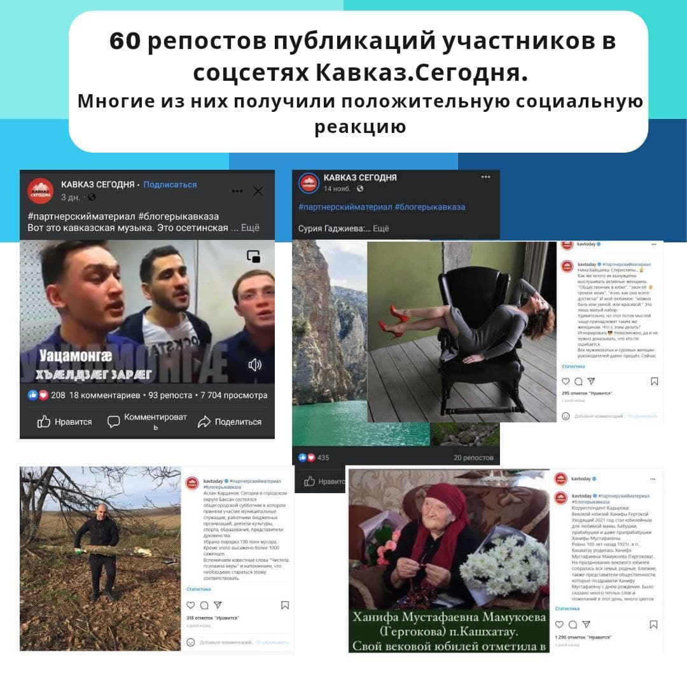
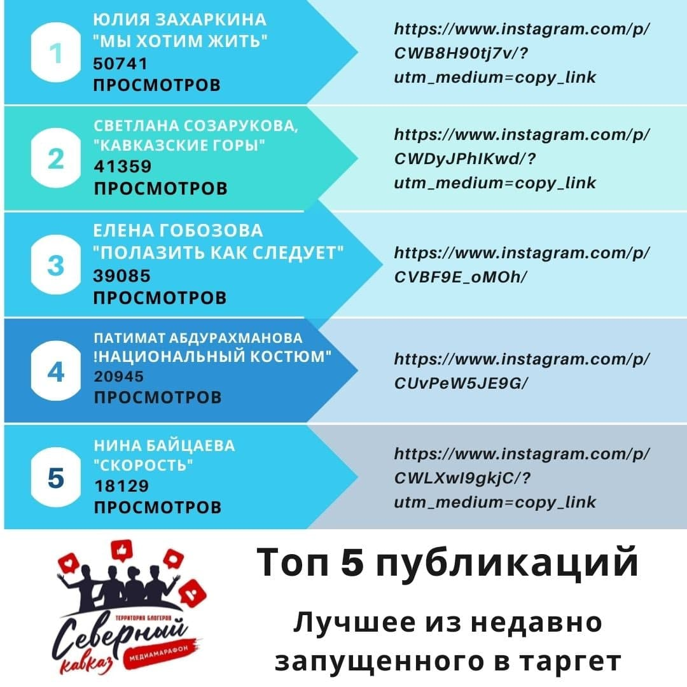
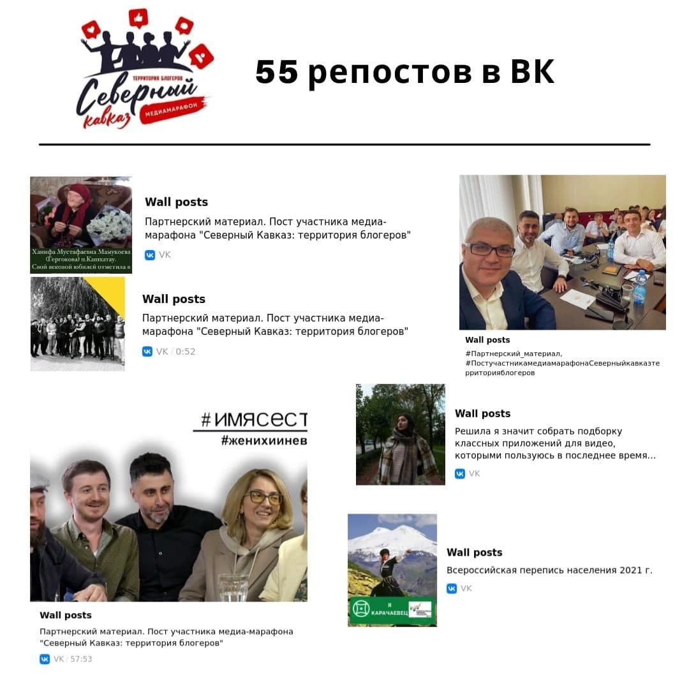

30 ноября завершится активный этап медиамарафона «Северный Кавказ: территория блогеров»
За три месяца значительно выросло качество и количество контента, производимого участниками
Благодаря совместной активной работе наших таргетологов публикации участников мадиамарофона собрали более 3 700 000 просмотров. Это стало возможным, потому что за три месяца значительно выросло качество и количество контента, производимого участниками.
В ноябре основной партнер «Территории блогеров» — «Кавказ Сегодня» разместил 60 лучших публикаций наших участников в своих социальных сетях. Это дополнительно привлекло новых подписчиков на страницы участников медиамарафона.
Также публикации блогеров получили репосты в 200 пабликах ВК всего Северного Кавказа и 20 каналах Telegram, в т.ч. федеральных.
В последние две недели общими усилиями мы провели пробные запуски информационных волн в регионе. Результаты пока анализируются, но уже сейчас можно говорить об эффективности сложившейся структуры.
Этот проект скоро закончится, но для наших участников их профессиональная деятельность в качестве блогеров только начинается. В декабре мы надеемся организовать встречу участников, чтобы обсудить будущее сложившегося сообщества.
Медиамарафон «Северный Кавказ: территория блогеров» реализуется при грантовой поддержке Федерального агентства по делам молодежи (Росмолодежь).
#Росмолодежь #Росмолгрант #РосмолгрантСКФО #РСВ #грантыРосмолодежи